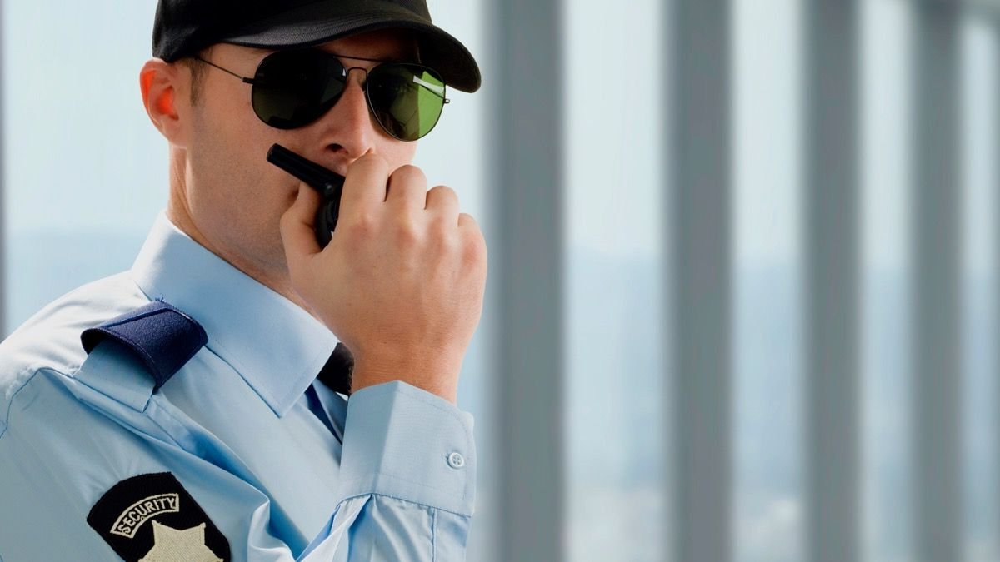

A segurança é um dos principais focos de nosso partido, não olhando a cor da pele, o gênero, ou opção sexual, queremos erradicar a violência que impõe medo em muitas famílias brasileiras.
Nosso objetivo é capacitar melhor nossos policiais, queremos ver de volta o sorriso de todos e que possam voltar a andar na rua sem medo.
Ao mesmo tempo melhorar as condições da aqueles que estão presos. A prisão, hoje, não recupera o criminoso para voltar a viver em sociedade, então nosso projeto inclui a divisão dos presos para evitar a superlotação e confusão e a presença da área da saúde, para atender questões psicológicas.